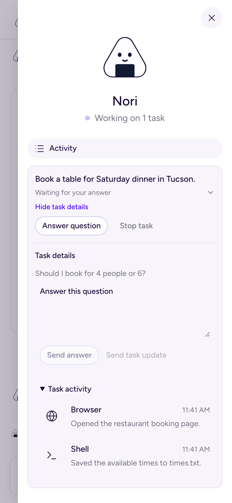

Screenshots come from the running client, with made-up data.
A Next.js app that shows one conversation with Nori and the activity of its tasks.
Screenshots come from the running client, with made-up data.
| Part | What it shows | Component |
|---|---|---|
| Header | Nova brand, Nori's mark and status, debug toggle, Refresh, Activity. | NovaShell |
| Thread | Saved messages, documents, time separators, older-message loading and one status line. | Thread |
| Composer | A text box that grows to 196 px, Send and a count of new messages. Enter sends and Shift+Enter adds a line. | RuntimeComposer |
| Activity panel | Running tasks, recent tasks, questions, events, results and screenshots. ⌘. or Ctrl+. toggles it. | TaskPanel |
| Reading view | A full-screen copy of a saved reply, with Download as Markdown and Back to chat. | DocumentViewer |


| Width | Layout |
|---|---|
| 1280 px and up | Activity docks beside the thread at 360 px. |
| Below 1280 px | Activity opens as a sheet from the right, over a scrim. |
| 900 px and below | The lavender margin shrinks from 28 px to 16 px. |
| 600 px and below | The window fills the screen, the Nova brand is hidden and the Activity button shows only its icon. |
Chat is the only page. /goals, /ideas, /library and /settings redirect to /.
| Header status | When |
|---|---|
| Connecting… | The first session request is loading. |
| Disconnected | A request failed or there is no session. Send stays disabled until a first session loads. |
| Waiting for you | A task has an open question or a waiting message. |
| Working… | A message, turn, task or command is in progress. |
| Ready when you are | Nothing is in progress. |
| Task label | Task state | Controls |
|---|---|---|
| Working on your task | Running | Stop task, Send task update |
| Waiting for your answer | Running with a question or a waiting message | Answer question or Continue task, Stop task |
| Answer accepted | Running, and the question is resolved | Stop task |
| Stopping… | Running, and Stop was requested | None until the agent service confirms |
| Completed, Failed, Stopped | Finished | None |
The thread status line can also say that task execution is paused. Chat still works during a pause. See Task lifecycle.
The client picks the layout from the Markdown of each saved reply. User messages are always bubbles.
<!-- nori:page --> or <!-- nori:bubble --> in the text forces a layout.Rules are in lib/hybrid.ts and lib/units.ts.